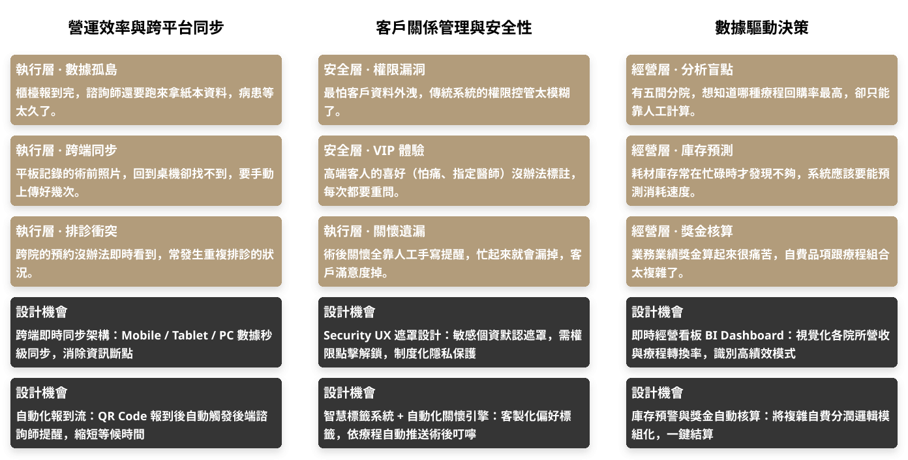

01. 需求獲取與現狀診斷
核心目標：由 PM 接收並轉譯醫美與自費診所的營運痛點，建立開發共識。
多方需求對齊：PM 蒐集來自診所院長（經營面）、櫃檯行政（流程面）與護理醫事人員（臨床面）的原始需求。
訪談洞察：針對醫美與自費診所的高端服務特性進行訪談，識別出傳統系統的限制。
安全性疑慮：高端客戶對於 CRM 資料的隱私要求極高，傳統系統缺乏嚴謹權限控管。
效率瓶頸：醫美療程繁瑣（預約、諮詢、術前、術後），跨平台的資訊流動存在斷點。
管理難點：跨分院的預約狀況與耗材庫存難以即時掌握。
